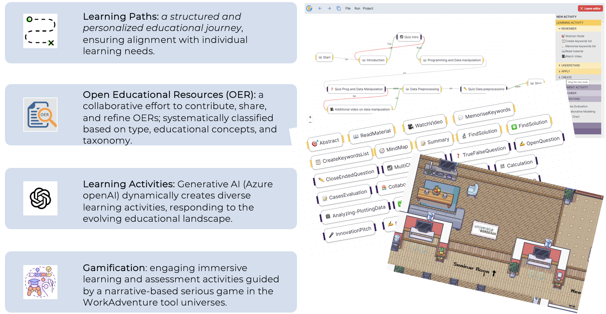

Personalizing Higher Education with AI and Gamification
Sign Up NowPolyGloT-Edu is an innovative platform that enables educators to create personalized learning paths using generative AI techniques and gamification to enhance student engagement and learning outcomes.
A structured and personalized educational journey ensuring alignment with individual learning needs.
Generative AI (Azure OpenAI) dynamically creates diverse learning activities responding to the evolving educational landscape.
Engaging, immersive learning and assessment activities guided by a narrative-based serious game in the WorkAdventure tool universes.
"PolyGloT-Edu has transformed the way I teach!" - Educator A
"My students are more engaged than ever." - Educator B
"A game-changer in personalized learning." - Educator C
Thousands of educators worldwide
Endorsed by top educational institutions
Secure and reliable platform